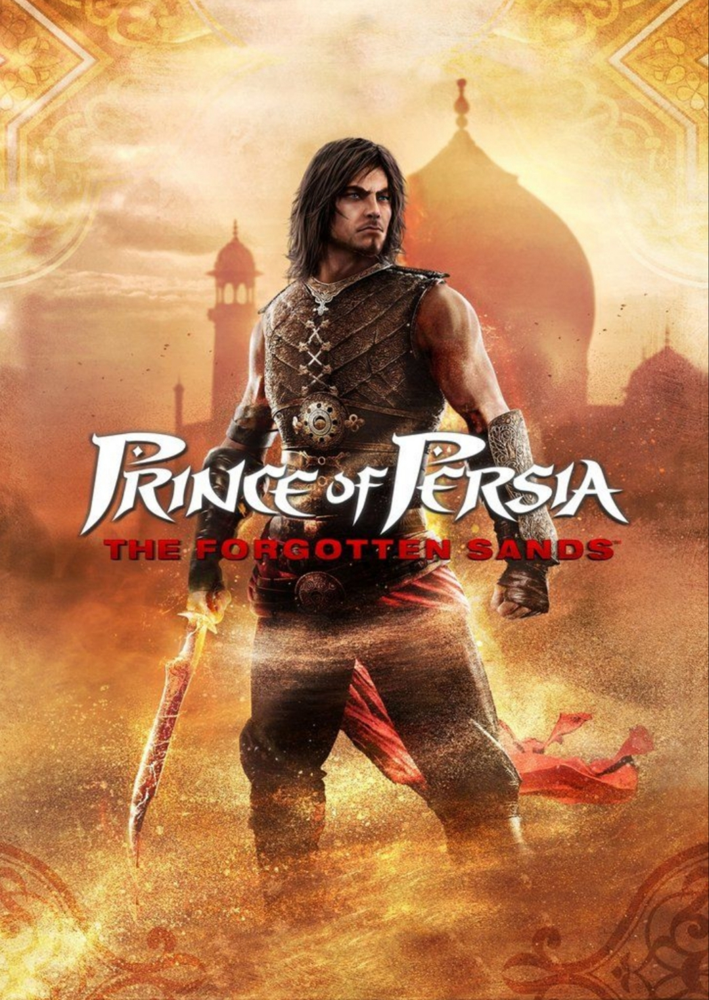
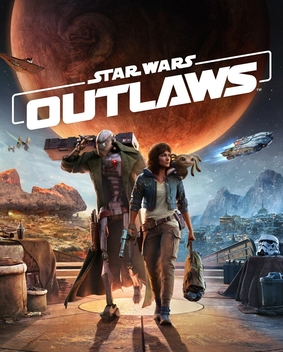

Ubisoft Newest game:
"Assassins creed : shadows" which is Ubisoft's newest game dispite all of its improvment, faces alot of problem beacuse of the changes that they do in the chinnes culture and beacuse of
the papulation that china has and we have a lot of gamers that are from chian. The other thing that gamers doesn't like much about this game is that we don't have straight main character in game, Naoe which is a women, she is lesbain and the other character, Yasuke which is a man is gay.
That are the least problems that this game will face.
Black Myth: Wukong
Black Myth: Wukong is an action RPG rooted in Chinese mythology and based on Journey to the West, one of the Four Great Classical Novels of Chinese literature. You shall set out as the Destined One to venture into the challenges and marvels ahead, to uncover the obscured truth beneath the veil of a glorious legend from the past. As the Destined One, you shall encounter powerful foes and worthy rivals throughout your journey. Fearlessly engage them in epic battles where surrender is not an option. Aside from mastering various staff techniques, you can also freely combine different spells, abilities, weapons, and equipment to find the winning strategy that best suits your combat style.
Prince of Persia
The Prince of Persia franchise is a long-running series that began in 1989 with the first-ever cinematic platformer. The series has dabbled in many genres, though the games are predominantly a blend of action-adventure and platforming. The original Prince of Persia isn't the series' only iconic game, as 2003's Prince of Persia: The Sands of Time is still considered one of the best action-adventure games of all time.

Helldivers 2
Helldivers 2 is a third-person cooperative shooter developed by Arrowhead Games Studios for the PC and PlayStation 5 where players take control of a Helldiver set to protect the citizens of Super Earth by traveling to hostile alien worlds and destroying threats.
Borderlands Players Have Cracked The Code For The "Most Valuable" Shift Key Ever Made
Borderlands players are no strangers to cracking codes and uncovering secrets in the game franchise, but the latest round of community sleuthing has proven to be especially lucrative. Thanks to a seemingly ordinary card given out at the recent PAX West convention, Borderlands players have received what is arguably the best Shift code in existence, and all it took was a solid grasp of binary language.
Read more.....
Star Wars Outlaws
Star Wars Outlaws is a 2024 action-adventure game developed by Massive Entertainment and published by Ubisoft. Set in the Star Wars universe between the events of The Empire Strikes Back (1980) and Return of the Jedi (1983), the story follows Kay Vess, a young scoundrel who assembles a team for a massive heist in order to pay off a crime syndicate.[1] The game is played from a third-person perspective, with the player traversing an open world environment and engaging in various activities.
The development team, supported by Lucasfilm Games and ten other Ubisoft studios, sought to combine canonical elements of the Star Wars universe with their own ideas, focusing on creating cinematic and seamless gameplay. Humberly González provided the motion capture and voice for Kay, while Dee Bradley Baker voiced her companion, Nix.
Star Wars Outlaws was released for PlayStation 5, Windows, and Xbox Series X/S on August 30, 2024. The game received generally positive reviews from critics.
Read more....

The last of us Part II
The Last of Us Part II is a 2020 action-adventure game developed by Naughty Dog and published by Sony Interactive Entertainment. Set four years after The Last of Us (2013), the game focuses on two playable characters in a post-apocalyptic United States whose lives intertwine: Ellie, who sets out in revenge for a murder, and Abby, a soldier who becomes involved in a conflict between her militia and a religious cult. The game uses a third-person perspective; the player must fight human enemies and zombie-like creatures with firearms, improvised weapons, and stealth.
The game's development began in 2014, after the release of The Last of Us Remastered. Neil Druckmann returned as creative director, co-writing the story with Halley Gross. The themes of revenge and retribution were inspired by Druckmann's experiences growing up in Israel. Ashley Johnson reprises her role as Ellie, while Laura Bailey was cast as Abby. Their performances included the simultaneous recording of motion and voice. Gustavo Santaolalla returned to compose and perform the score. The developers pushed the PlayStation 4's technical capabilities. Development reportedly included a crunch schedule of 12-hour workdays and cost around US$220 million, making it one of the most expensive video games to develop.
Following some delays, partly due to the COVID-19 pandemic, The Last of Us Part II was released for the PlayStation 4 on June 19, 2020. A remastered version was released for the PlayStation 5 on January 19, 2024. Part II received acclaim for its gameplay, audio design, score, performances, characters, and visual fidelity, though its narrative and themes divided critics. It was review bombed on Metacritic, with some players criticizing the story and characters; discourse surrounding the game became adversarial. Part II is one of the best-selling PlayStation 4 games and the fastest-selling PlayStation 4 exclusive, with over four million units sold in its release weekend and over ten million by 2022. It won more than 320 Game of the Year awards and received multiple other accolades from awards shows and gaming publications.
Read more...